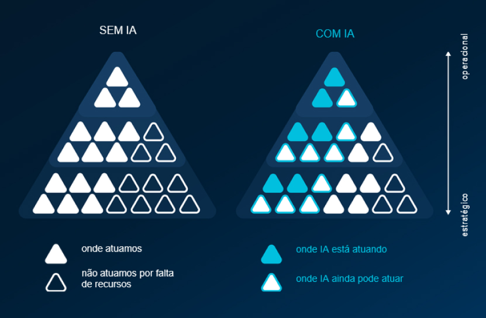
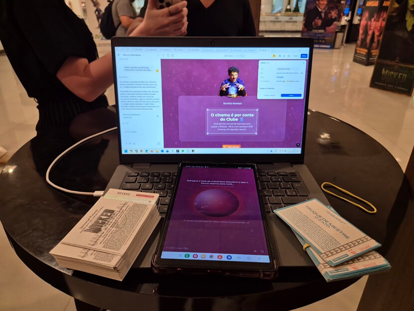

01Contexto
O time de UX que lidero dentro do Grupo RBS é responsável pela experiências de produto e também por ações de growth B2C: conversão, engajamento e retenção. Parte do time estava diretamente conectada ao crescimento da base de assinaturas digitais e às campanhas que sustentavam esse crescimento.
No início de 2025, o time passou por uma redução de 1/3 da capacidade operacional. As mesmas áreas continuavam dependendo do trabalho de UX para sustentar jornadas de aquisição e retenção. A pergunta era simples: como continuar entregando no mesmo ritmo sem sobrecarregar quem ficou?
02O desafio
O desafio não era apenas continuar entregando. Era continuar entregando com qualidade, consistência e impacto no negócio. As entregas afetadas envolviam otimização de campanhas via e-mail e WhatsApp, estratégia de newsletters e ações de engajamento de assinantes. Tudo precisava manter identidade editorial, tom de voz e desempenho comprovado.
Com um time menor, o risco era claro: ou reduziríamos o volume, ou comprometeríamos a qualidade. Nenhuma das duas opções era aceitável.
03A virada
Os primeiros experimentos com IA não foram animadores. Os textos vinham genéricos, cheios de clichês, desalinhados com a identidade da marca. Em alguns casos, escrever do zero era mais rápido do que revisar o que a IA produzia. Parecia que estávamos adicionando complexidade, não removendo.
Foi aí que percebi que estávamos fazendo a pergunta errada. O problema não era a capacidade da IA. Era o contexto que oferecíamos para ela. A documentação de tom de voz e padrões existia, mas era em grande parte implícita, interpretada intuitivamente pelas pessoas do time. Suficiente para humanos, insuficiente para modelos.
IA escala o operacional. Humanos dirigem estratégia.
Esse princípio também respondia à tensão cultural do momento. Depois das demissões, investir em IA soava, para alguns, como o caminho para novas reduções. Tornar o movimento seguro para o time foi tão importante quanto a parte técnica: a IA passou a representar ampliação de capacidade, não substituição.

04Decisões e tradeoffs
- Comecei pelo conhecimento, não pela ferramenta. Transformamos documentação em infraestrutura: princípios de tom de voz, padrões do design system, exemplos de mensagens de alta performance, do's & don'ts de linguagem e estruturas narrativas de campanha. A documentação deixou de ser burocracia e virou a condição para escalar qualidade.
- Criei agentes especializados em vez de um assistente genérico. Agentes de e-mail marketing, WhatsApp, assuntos de newsletter, engajamento, redes sociais do Clube do Assinante e um estrategista para ações promocionais. Cada um com contexto próprio e escopo claro.
- Defendi um fluxo com humano no centro. IA gera variações, humano seleciona e refina, sistema escala a produção. O copywriter deixou de escrever tudo do zero e passou a atuar como diretor da criação.
- Aceitei o custo inicial de desacelerar para estruturar. Nos primeiros meses o processo ficou mais lento e o time um pouco sobrecarregado, mas sustentei essa decisão porque a alternativa era escalar mediocridade.
05Resultado
- Mais de 300 e-mails e 230 mensagens de WhatsApp produzidos com apoio de IA em um único trimestre
- Agilidade aproximadamente 3x maior em demandas operacionais
- Sem perda nos indicadores: taxa de abertura, CTR e conversão mantiveram os níveis anteriores
- O time passou a atuar de forma mais estratégica: direcionamento criativo, experimentação e decisões de produto
O impacto mais interessante foi organizacional. O que começou como um momento difícil se transformou em algo próximo de uma promoção coletiva: com a IA assumindo o operacional, as pessoas elevaram o nível da própria contribuição e a maturidade geral do time.
